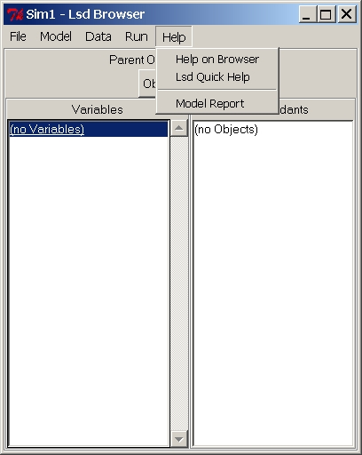

Menu "Help"
This menu offers a quick help on the use of Lsd interfaces, identical
for every model, and two different model-specific reference documents.
The first is a document commenting each and every element of the model
(Model Help). The second reports all the cross-references between
Objects,
Parameters and Variables, including the equations' code (Model Report).
Both documents must be created by the model authors via automatic
routines
(see menu Model/ Create Report
and Create Help).

Menu "Help" Entries: